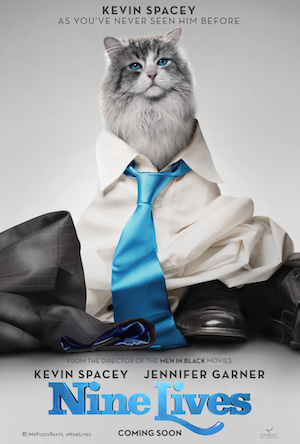

Latest film:
Nine Lives
(IMDB Rating: 3.5)
A stuffy businessman finds himself trapped inside the body of his family's cat.
Tom Brand (Kevin Spacey) is a daredevil billionaire at the top of his game. His eponymous company FireBrand is nearing completion on its greatest achievement to date - the tallest skyscraper in the northern hemisphere. But Tom's workaholic lifestyle has disconnected him from his family, particularly his beautiful wife Lara (Jennifer Garner) and his adoring daughter Rebecca (Malina Weissman).
Rebecca's 11th birthday is here, and she wants the gift she wants every year, a cat. Tom hates cats, but he is without a gift and time is running out. His GPS directs him to a mystical pet store brimming with odd and exotic cats- where the store's eccentric owner- Felix Perkins (Christopher Walken), presents him with a majestic tomcat, named Mr. Fuzzypants. En route to present his daughter with her dream pet, a bizarre turn of events finds Tom trapped inside the body of Mr. Fuzzypants.
Adopted by his own family, he begins to experience what life is truly like for the family pet, and as a cat, Tom begins to see his family and his life through a new and unexpected perspective. Meanwhile, his family adjusts to life with an odd and stubborn cat, and his son David (Robbie Amell), steps up in ways Tom never expected. If any hope exists of returning to his family as the husband and father they deserve, Tom will have to learn why he has been placed in this peculiar situation and the great lengths he must go to earn back his human existence.